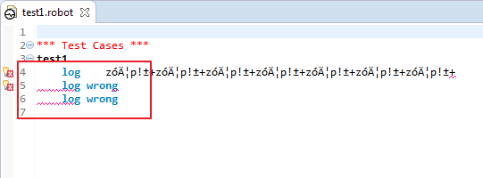
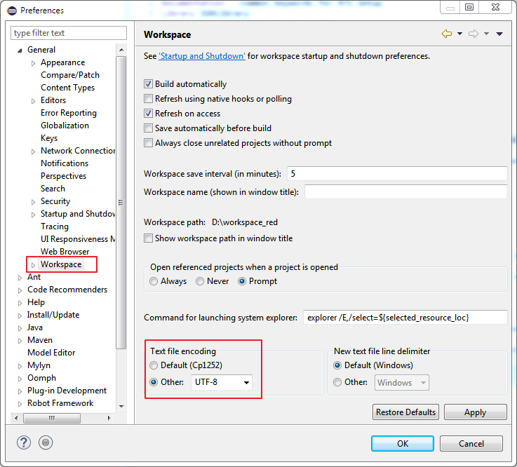

Unicode - handling testcases with language specific characters
Eclipse by default is not configured to interpret and display language specific characters in text editors.
This leads to displaying such characters as non readable, also markers for errors and warnings will be shifted thus an offset of error and underline will be observed.

This can be fixed by selecting proper charset for editors, visit Window->Preferences->General->Workspace and set Text file encoding to UTF-8.
